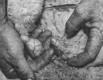

Each testicle is then pulled outalong with its spermatic cord-by one hand, while the other maintains pressure against the lamb's underside to prevent rupture. This castration technique draws little blood, except for a small flow from the tiny capillaries of the ram's scrotum